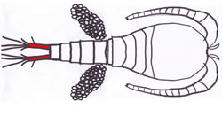
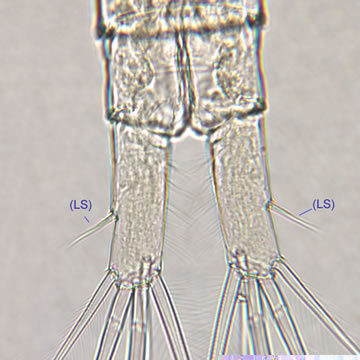
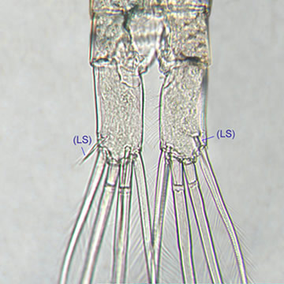

Examining the highlighted area of your specimen, click on the image below which most closely resembles your specimen.


-
Choice 1 of 2

Lateral setae (LS) inserted at middle of rami / Lateral setae at middle of rami (LS) Species: Mesocyclops edax -
Choice 2 of 2

Lateral setae (LS) inserted at apex of rami Go to step 100
Videos for this step
Video: Mesocyclops -- Lateral setae at middle of rami of M. edax
Mesocyclops edax lateral setae at middle of rami (640X)
Taxonomy
- Phylum
- Arthropoda
- Subphylum
- Crustacea
- Class
- Maxillopoda
- Subclass
- Copepoda
- Order
- Cyclopoida
- Family
- Cyclopidae